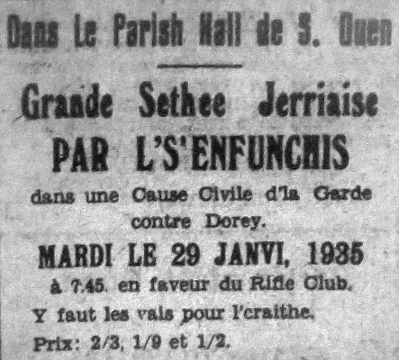

Au "Rédacteu d'la Gazette."
Moussieu, - Vos pliaitha-t-i' m'donner un mio d'run dans vot' papi à ces sé pour enrégistrer deux-trais patholes d'èrmèrcîment ès Enfuntchis d'la part des St. Ouonnais.
Les Rotchais lus présentîtent à St Ou mardi au sé et nouos donnîtent eune séthée en jèrriais comme y'avait longtemps qu'nou n'avait ouî dans la Salle Pârouaissiale.
Ch'est grand damage dé vaie not' vielle langue dispathaître p'tit à p'tit et si nâvrant d'saver qué ch'est l'influence d'eune êtrangliéthe - la langue angliaîche, et dé chein qu'nou-s-appelle lé PROGRÈS, tchi nouos ôte à jamais (à nous tchi somme normands d'race) chu vier dialecte du natif jèrriais, mais v'là tchi nouos sèrt dé consolation dé penser qu'y'a acouo des gens comme les Sieurs Bertram et Malzard auve lus troupé prês à mettre lus laisi à la disposition d'lus couôsins jèrriais partout l'Ile.
Le concèrt est en jèrriais Grouvillais atou la prononciation Rotchaise et 'ouos en châle qué ch'est d'tchi rare.
Au publyi d'l'Ile - né mantchiz pon d'aller les vaie en tchique temps.
L'Association du tir dé St. Ou d'sithe èrmèrcier aouo eune fais l's'Enfuntchis pour chutte magnifique séthée et lus souhaite bouonne chance, espéthant tch'il' éthont l'même succès ailleurs comme dans not' pâraisse.
Pour lé Comité du Tir,
UN ST. OUONNAIS
Evening Post 1/2/1935
Viyiz étout:
{kind=link}